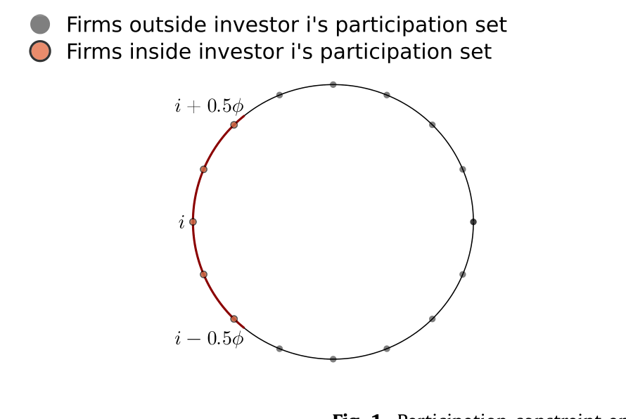
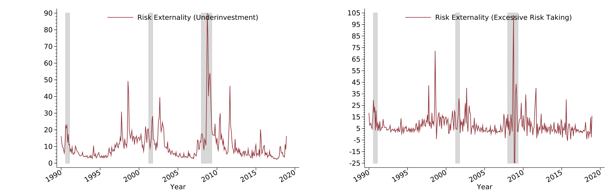
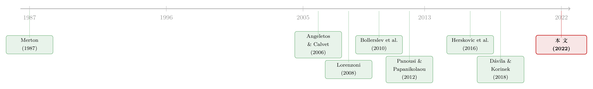

你扛下的特质风险，账单却寄给了别人
本文读的是 Iachan, Silva & Zi (2022, JFE)：当投资者无法充分分散持仓、而每家公司的特质风险又随经济周期内生地涨落时，企业的投资决策会通过「变量成本—经营杠杆—特质波动率」这条暗线，悄悄改变别人承担的风险。可企业谁也不会替别人考虑这件事——于是市场陷入一种全新的「特质风险外部性 (idiosyncratic risk externality)」，表现为投资不足与总量风险承担过度。作者用资产价格数据估出，这笔没人内化的福利损失大约是每投资一美元 3 美分。
1 一个被忽略的「连带责任」
先讲一个直觉上有点反常的故事。
我们习惯把「特质风险 (idiosyncratic risk)」当成一件私人的事：你重仓了某一家公司，它的好坏只与你自己有关；理论上你只要把篮子里的鸡蛋分散开，这份风险就会在组合里被对冲殆尽，于是在经典的资产定价里，它根本不该被定价。这是 Sharpe-Lintner 以来教科书的标准答案。
可现实里，分散从来没有做到位。创业者把大半身家压在自家公司上（Himmelberg et al., 2000），散户的持仓高度集中、还偏爱「身边」的股票（Blume & Friend, 1975; Kelly, 1995; Calvet et al., 2007; Ivković & Weisbenner, 2005）。一旦分散不充分（under-diversification），特质风险就会渗进定价核 (pricing kernel)，进而扭曲企业的投资。这一点，前人已经讲了不少。
但本文真正要问的，是一个更尖锐、也更少有人碰的问题：
如果每家公司承担多少特质风险，并不是外生给定的，而是被所有公司的投资决策共同「内生地」决定的——那么一家公司在做投资决策时，是不是无意中改变了别人头上的那份风险？如果是，市场还有效率吗？政策又能做什么？
接着，一个自然的问题是：企业的投资，凭什么能影响「别人」的特质风险？答案藏在劳动力市场里——这正是全文最精巧的一步。
2 核心机制：经营杠杆是怎样把公司「绑」在一起的
设想所有公司在景气时一起扩张投资。资本多了，对劳动力的需求就上去，工资 \(W_s\) 被抬高。工资一高，单位产品的可变成本上升、利润率被压薄。利润率薄意味着什么？意味着经营杠杆 (operating leverage) 下降——同样一个生产率冲击 \(\theta_{j,s}\) 打过来，对利润的放大效应变小了。于是每家公司的特质风险都被摊薄了。
反过来，在萧条时工资低、利润率厚、经营杠杆高，一个生产率冲击就会被放得很大。所以特质波动率天然是逆周期 (countercyclical) 的——这与 Campbell et al. (2001) 的经验事实一致，也与 Donangelo et al. (2019) 关于劳动杠杆的横截面证据吻合。
把这条逻辑用模型的语言写出来。第二期，企业用 Cobb-Douglas 技术生产：
$$Y_{j,s} = (\theta_{j,s} K_{j,s})^{\alpha} L_{j,s}^{1-\alpha}$$
在工资 \(W_s\) 下选择劳动需求，一阶条件给出
$$L_{j,s} = \left(\frac{1-\alpha}{W_s}\right)^{\frac{1}{\alpha}} \theta_{j,s} K_{j,s}$$
代回去，单位资本利润（profit per unit of capital）就变成
$$\pi_{j,s} = \alpha\,\theta_{j,s}\left(\frac{1-\alpha}{W_s}\right)^{\frac{1-\alpha}{\alpha}}$$
注意看这个式子的条件方差——这才是全文的「机关」所在：
$$\operatorname{Var}_s\!\left[\pi_{j,s}\right] = \alpha^{2}\left(\frac{1-\alpha}{W_s}\right)^{\frac{2(1-\alpha)}{\alpha}}\sigma_{\theta}^{2}$$
特质波动率由两块决定：一是产量本身的离散度，由外生的生产率方差 \(\sigma_\theta^2\) 给定；二是利润率 \(\tfrac{1-\alpha}{W_s}\)，它是内生的，随工资 \(W_s\) 一起动。换句话说，\(W_s\) 一变，每家公司的特质风险都跟着变——而 \(W_s\) 又是被所有公司的总投资顶起来的。
这就完成了那条暗线：单家公司的投资 → 总劳动需求 → 工资 → 利润率 → 别人的特质波动率。 每家公司在算自己的账时，只看自己那一点投资对工资的边际影响（在大量公司里近似为零），却忽略了「大家一起投」对工资、从而对所有人特质风险的影响。这个被忽略的部分，就是外部性的来源。
（关于「贴现率/定价核为什么会随状态呼吸」这条更一般的脉络，可参见《定价核的两副面孔：为什么同样跌 10%，在「平静市」里更让人心痛？》。）
3 模型：从「圆圈上的投资者」到一个会自我放大的 SDF
这是一篇模型论文，值得把骨架一步步搭清楚。
环境。 两期 \(t=0,1\)。一个周长为 1 的圆圈上住着 \(N\) 个事前同质的投资者（下标 \(i\)）和 \(N\) 家公司（下标 \(j\)）。不确定性分两层：一个总量状态 \(s\in\{l,h\}\)（坏/好），它来自唯一的总量风险源——「风险」投资技术的回报；以及每家公司各自的特质生产率冲击 \(\theta_{j,s}\)，满足横截面上加总为常数：
$$\frac{1}{N}\sum_{j\in J}\theta_{j,s} = \bar\theta$$
也就是说特质冲击只重新分配、不改变总产出。
两种技术。 公司把资本投在「无风险」技术（\(k=0\)，\(\varphi_0=1\)，旱涝保收一单位资本换一单位资本）和「风险」技术（\(k=1\)，\(\varphi_1\) 随状态变、且 \(E[\varphi_1]>1\) 但坏状态下 \(\varphi_1<1\)）之间。经济对总量风险的暴露不是外生的，而是由企业的组合选择内生决定。
欠分散。 这是 Merton (1987) 式的「有限参与 (limited participation)」：投资者 \(i\) 只能投资到离她不超过 \(\phi/2\) 的那段圆弧上的公司，可投集合 \(P_i=\{j: d(i,j)\le 0.5\phi\}\)。参数 \(\phi\in[0,1]\) 就是分散程度的度量：\(\phi=1\) 全圆可投、完美分散；\(\phi=0\) 只能投一家、把那家的特质风险全扛下来（这正是 Chen et al., 2010 与 Panousi & Papanikolaou, 2012 的创业者情形）。Figure 1 把这件事画得很直观——Panel A 是投资者能触达的那段弧，Panel B 对比了单家公司的生产率分布与组合平均生产率的分布：随着 \(\phi\) 变大，组合里平均生产率的离散度被压窄，分散见效。

Figure 1: Participation constraint
投资者问题。 CRRA 偏好、风险厌恶系数 \(\gamma\)：
$$\max_{C_{i,0},\,\{\omega_{i,j}\}}\; u(C_{i,0}) + \beta\,E\!\left[u(C_{i,s})\right],\qquad u(C)=\frac{C^{1-\gamma}-1}{1-\gamma}$$
受限于第二期消费 \(C_{i,s}=R^{i}_{p,s}(E_0-C_{i,0})\)、\(\sum_j\omega_{i,j}=1\)、以及有限参与约束 \(\omega_{i,j}=0\)（对 \(j\notin P_i\)）。由此得到投资者 \(i\) 的随机贴现因子 (SDF)：
$$M_{i,s} = \beta\left(\frac{C_{i,s}}{C_{i,0}}\right)^{-\gamma}$$
关键的递归一步：企业的投资问题。 公司由其股东（按持股加权）来定价，目标是最大化期末折现回来的投资净现值。这是全文最核心的方程，把它逐块拆开看：
其中单位资本回报 \(R^a_{j,s}:=1-\delta+\pi_{j,s}\)。对内点解求一阶条件，得到投资的欧拉方程：
$$E\!\left[M_{j,s}\,R^{a}_{j,s}\right]\varphi^{k}_s = 1,\qquad k=0,1$$
读懂这个一阶条件，就读懂了一半的文章：企业是否多投一单位资本，取决于它的回报 \(R^a_{j,s}\) 在 SDF \(M_{j,s}\) 下值多少钱。而 \(M_{j,s}\) 因为欠分散，不再是代表性个体的 SDF。
然后，真正关键的一步在于本文对这个 SDF 的刻画。作者证明，整个经济的 SDF 可以写成两项之积：一个代表性个体经济的 SDF，乘上一个随特质波动率水平递增的项。直觉是这样的：在特质波动率高的状态里，欠分散的投资者消费离散度大、边际效用高，于是他们格外看重这种状态——SDF 在这些状态里被顶高。
这立刻带来两个能对上经验事实的资产定价含义：
- 特质波动率高的状态，溢价为负。 既然 SDF 随特质风险递增，那些「在高波动状态里恰好赔得少」的资产就成了避险工具，要付出负溢价。这与 Herskovic et al. (2016) 记录的事实一致。
- 特质方差风险溢价为正。 即风险中性测度下的特质方差，系统性地高于物理测度下的——这正对应 Bollerslev et al. (2009)、Drechsler & Yaron (2010) 在总量层面记录的方差风险溢价 (variance risk premium)，本文在第 4 节给出了它在特质层面的证据。
而且，正如 Merton (1987) 的原始模型，均衡里特质风险要求一个正的溢价，这个溢价的大小取决于欠分散的程度 \(\phi\)——这就给「从资产价格反推 \(\phi\)」打开了一扇门。
4 反转：方向由外部性决定，而不是由「第一最优」决定
到这里，故事可以收口了。
把上面两条拼起来：企业不内化「大家一起多投 → 工资涨 → 利润率薄 → 经营杠杆降 → 别人的特质风险被摊薄」这条链。社会规划者会内化这份额外的好处，于是它认为laissez-faire（自由放任）下投资不足。同理，企业也不内化「多承担总量风险 → 把资源从坏状态挪到好状态 → 在坏状态（恰是特质波动率最高时）抬高经营杠杆、放大特质风险」，于是规划者认为总量风险承担过度。
这里有一处特别值得玩味的反转：私人部门的总量风险承担，其实已经低于第一最优 (first-best) 了（因为欠分散本身让投资者更怕坏状态、压低了冒险意愿）。可规划者仍然要求他们再降一点风险。也就是说——
干预的方向，是由「外部性」本身决定的，而不是由「和第一最优比谁高谁低」决定的。这正是「受约束无效率 (constrained inefficiency)」与「第一最优」的关键区别：规划者承认自己也没法直接提高分散程度 \(\phi\)，但即便戴着这副镣铐，他仍能改善福利。
这就把本文牢牢钉在了「不完全市场下的货币性外部性 (pecuniary externalities)」这一传统里——Stiglitz (1982)、Greenwald & Stiglitz (1986)、Geanakoplos & Polemarchakis (1986) 奠基，Dávila & Korinek (2018) 给出了现代分类。本文的新意，是第一次把「内生且逆周期的特质回报风险」与「不可保险的特质冲击 + 风险厌恶的投资者」这两味药同时下进锅里。
5 充分统计量：用资产价格给福利损失称重
光说「无效率」还不够，作者要的是一个能算的数。这里用的是充分统计量 (sufficient-statistic) 方法：绕开「把整个模型结构全估出来」的苦工，直接从资产价格读出福利含义。
两个量级值得记住：
- 从自由放任出发、提高投资带来的福利收益，取决于特质风险溢价与特质方差风险溢价。作者估出：投资者没有内化的福利收益约为每投资一美元
3 美分。这等价于说，无风险技术的社会贴现率比私人部门低了整整3 个百分点。 - 降低总量风险承担的收益，取决于特质方差风险溢价与风险中性概率。作者估出：把投资的标准差降低一个单位，带来约
1.2%的福利收益；等价于规划者眼中风险技术的夏普比率比私人部门低4%。
Figure 3 把估出来的条件特质风险溢价画成了时间序列，可以看到它确实随经济周期起伏——这正是「逆周期特质风险」这个核心假设在数据里的影子。

Figure 3: shows the time series of the conditional risk ex-
两个数字都不小，说明欠分散造成的投资扭曲，量级上是真金白银的。
那政策怎么落地？ 本文给的答案很「巴塞尔」：引入一个金融中介，用债务的税收优惠 (tax benefit on debt) 搭配风险加权资本要求 (risk-weighted capital requirements)，就能同时把投资抬上去、把总量风险压下来——本质上是降低安全项目的资本成本、抬高风险项目的资本成本。而且最优税收优惠和最优风险权重，都可以直接和资产价格挂钩。这与 Jeanne & Korinek (2019) 那一脉「庇古税式」的宏观审慎思路同气连枝。
6 文献脉络
把这条线索从头捋一遍。
最早，欠分散本身被认真对待：Levy (1978)、Merton (1987)、Hirshleifer (1988) 论证了当投资者只能持有有限证券时，特质风险会被定价。接着，人们开始追问特质风险对实体经济的影响：Angeletos & Calvet (2006) 把它放进增长与周期，Panousi & Papanikolaou (2012) 记录了特质风险如何压低投资，Chen et al. (2010) 在创业者框架里刻画了不可分散风险下的资本结构。
然后，Herskovic et al. (2016) 发现特质波动率里有一个「共同因子」，并把它的资产定价含义量化出来——这成了本文要去解释的核心经验事实。与此同时，方差风险溢价这条线（Bollerslev et al., 2009; Drechsler & Yaron, 2010）提供了另一块拼图。

另一条平行的线，是不完全市场下的受约束无效率与货币性外部性：从 Stiglitz (1982)、Greenwald & Stiglitz (1986) 一路到 Lorenzoni (2008)「无效率的信贷繁荣」、Caballero & Lorenzoni (2014)、He & Kondor (2016)，再到 Dávila & Korinek (2018) 的统一分类。
本文 (2022) 站在这两条线的交汇点上：它既不是 Gromb & Vayanos (2002)、Di Tella (2019) 那种「有不可保险风险但没有从投入品价格到风险的反馈」的模型，也不是 Itskhoki & Moll (2019)、Bocola & Lorenzoni (2020) 那种「有可变投入品但没有特质回报风险」的模型，更不是 Lorenzoni (2008)、He & Kondor (2016) 那种「风险中性 + 货币性外部性」。把这两味药同时下进去，就识别出了一种新的无效率来源——这是它对文献最干净的边际贡献。
7 评论与延伸（Q&A + 研究方向）
(a) 几个可能的疑问
Q：这个「特质风险外部性」和经典的货币性外部性（如 Lorenzoni 的信贷繁荣）到底有什么不一样？
形式上同属「价格（这里是工资 \(W_s\)）变动引发的外部性」，但本文的新意在于价格冲击落到的是风险的数量而非财富的再分配。在风险中性的经典模型里，价格变动只重分配财富、不影响福利；这里因为投资者风险厌恶且欠分散，工资变动改变的是大家头上特质波动率的水平，从而直接进入 SDF 和福利。少了「内生逆周期特质风险 + 风险厌恶 + 欠分散」三者同时在场，这个外部性就消失了。
Q：为什么规划者要求降低总量风险，而私人风险承担本来就低于第一最优？这不矛盾吗？
不矛盾，关键是把「相对第一最优」和「相对外部性」分开。欠分散让投资者过度厌恶坏状态，所以他们的风险承担本就偏低；但这与外部性是两码事。外部性说的是：每多冒一点总量险，会在特质波动率最高的坏状态里抬高经营杠杆、放大别人的特质风险——这个边际损害没人内化。干预的方向由后者决定。所以会出现「已经偏低、却还要再降」的反直觉结论。
Q：「3 美分」和「1.2%」这两个数靠谱吗？依赖什么前提？
它们是充分统计量估计，输入是特质风险溢价、特质方差风险溢价和风险中性概率——这些都能从资产价格读出，因此绕开了对整个模型结构的估计，稳健性更好。但代价是：估计的有效性依赖模型把福利映射到这几个统计量的那套映射是对的，也依赖把模型里的 \(\phi\) 等参数与数据对应起来的校准。换句话说，数字的可信度等于「模型设定 + 价格测度」的可信度。
Q：特质波动率「逆周期」这个核心假设，本文是假设出来的还是内生出来的？
是内生出来的，这正是亮点。模型没有假设状态依赖的生产率方差（\(\sigma_\theta\) 是常数）；逆周期完全来自工资—利润率—经营杠杆这条链。这也意味着，如果现实中工资黏性很强、或劳动需求对总投资不敏感，这条机制就会变弱。
Q：和 Merton (1987) 的老模型相比，本文多了什么？
Merton 给出了「欠分散下特质风险被定价」的静态结论。本文把特质风险的水平内生化（让它随投资、工资、周期动），并进一步追问这种内生性带来的规范含义——无效率与最优政策。从「特质风险被定价」到「特质风险被内生地、低效地定价，且可被监管纠正」，是质的推进。
Q：用「圆圈 + 邻域」来刻画欠分散，是不是太抽象、离真实市场太远？
这是一个建模上的便利设定，好处是用单一参数 \(\phi\) 干净地度量分散程度，并能映射到 Ivković & Weisbenner (2005) 的「本地偏好」证据。局限是它把分散的摩擦简化成了「地理可达性」，没有显式刻画信息获取成本（Van Nieuwerburgh & Veldkamp, 2010）或监督收益（Admati et al., 1994）这些导致欠分散的更深层原因。结论对 \(\phi\) 的来源是「不可知论」的，这既是它的稳健，也是它的留白。
(b) 几个可能的研究问题与提案
1. 把这套外部性搬到公司债/信用市场。 【经济故事】本文的载体是股权和投资者的欠分散。但信用市场里，特质违约风险同样难以充分分散（很多债券持有人集中度极高），而且违约的经营杠杆机制和这里几乎同构——工资、可变成本、利润率直接决定了违约边界附近的特质波动率。一个自然的猜想：信用利差里也藏着一个没人内化的「特质违约风险外部性」。 【可行性】中。识别需要把模型的 SDF 映射到信用利差，数据上可用 TRACE 的成交价、Mergent FISD 的发行特征。难点是债券持有人结构的可得性与欠分散程度 \(\phi\) 的度量。
2. 用外资持有人的进入作为 \(\phi\) 的外生变动。 【经济故事】本文最难识别的就是「分散程度」这个内生量。外资机构进入某国/某行业，相当于外生地扩大了本地资产的可投资者池、提高了分散程度——这恰好是一个能撬动 \(\phi\) 的自然实验。理论预测：外资进入后，本地特质风险溢价下降、投资上升、总量风险承担上升。 【可行性】中高。可借 MSCI 纳入、QFII/沪深港通等准自然实验，配合 FactSet/EPFR 的持有人数据做事件研究或 DiD。识别上要小心外资进入同时带来的信息与治理效应。
3. 直接检验「投资—工资—特质波动率」这条微观链。 【经济故事】本文的整个机制建立在一个可检验的因果链上：总投资上升 → 地方工资上升 → 利润率下降 → 企业层面特质波动率下降。如果这条链在数据里被证伪，整篇文章的规范结论就悬空了。 【可行性】高。用 Compustat 的企业层面波动率、地区/行业工资（QCEW）、以及对地方投资冲击的工具变量（如 Bartik 式需求冲击）就能逐环节检验。这是 doable 且能独立成文的实证题。
4. 把「特质风险外部性」纳入宏观审慎政策的量化评估。 【经济故事】本文给出了「债务税收优惠 + 风险加权资本要求」的最优政策，且与资产价格挂钩。一个延伸是：现行巴塞尔风险权重，离这个「特质风险外部性最优」的权重有多远？差距能不能解释一些观察到的资本错配？ 【可行性】中。需要把模型校准到一国银行/企业数据，再与实际监管权重对比。理论框架现成，难在校准的可信度。
5. 流动性维度的类比：分散不足是否也制造了「流动性外部性」？ 【经济故事】本文讲的是风险数量的外部性。但投资者欠分散往往伴随集中持有，集中持有又与抛售时的价格冲击（流动性）紧密相关。是否存在一个平行的机制：企业投资 → 影响别人持仓的集中度与可分散性 → 影响系统的流动性承载力？ 【可行性】低到中。机制更曲折，且「流动性」与「特质风险」在度量上容易混淆，需要很干净的设定才能把两者分开。（关于特质波动率本身是否可预测，可参见《「波动率之谜」其实是一道预测题：当鞅模型预报失灵》。）
8 我的判断与参考文献
贡献。 这篇文章最漂亮的地方，是用一条极其朴素的劳动力市场链条（工资 → 利润率 → 经营杠杆 → 特质波动率），把「特质风险」从一件私事变成了一件有连带责任的公事，并由此识别出一种此前文献没有同时具备「内生逆周期风险 + 欠分散 + 风险厌恶」三要素的新外部性。更难得的是，它没有停在「无效率」的定性结论上，而是用充分统计量把福利损失变成了能从资产价格里读出的数字，并给出与价格挂钩的可实施政策。理论的优雅与经验的可操作性，在这里结合得相当克制。
对识别的担忧。 我最在意三点。其一，整套规范结论依赖「特质波动率逆周期」这个内生结果，而它又依赖工资对总投资足够敏感——若劳动市场黏性强，机制会被显著削弱，这一环缺乏直接的微观证据支撑。其二，分散程度 \(\phi\) 是个难以观测的内生量，从特质风险溢价反推 \(\phi\) 再去算福利，链条偏长，对模型设定的依赖很重。其三，「3 美分」「1.2%」这类数字是充分统计量估计，其稳健性等于背后那套映射的稳健性，读者应把它们当作量级提示而非精确测度。
后续想看到的。 我最想看到第 7(b) 节里那条「投资—工资—特质波动率」微观链的直接经验检验——它是全文的地基，却恰恰是被假设、而非被验证的部分。其次，把这套外部性搬到信用市场或用外资进入撬动 \(\phi\)，都可能给这个偏理论的框架找到更硬的识别。
参考文献
- Admati, A. R., Pfleiderer, P., & Zechner, J. (1994). Large shareholder activism, risk sharing, and financial market equilibrium. Journal of Political Economy 102(6), 1097–1130.
- Angeletos, G.-M., & Calvet, L.-E. (2006). Idiosyncratic production risk, growth and the business cycle. Journal of Monetary Economics 53(6), 1095–1115.
- Bollerslev, T., Tauchen, G., & Zhou, H. (2009). Expected stock returns and variance risk premia. Review of Financial Studies 22(11), 4463–4492.
- Caballero, R. J., & Lorenzoni, G. (2014). Persistent appreciations and overshooting: A normative analysis. IMF Economic Review 62(1), 1–47.
- Campbell, J. Y., Lettau, M., Malkiel, B. G., & Xu, Y. (2001). Have individual stocks become more volatile? An empirical exploration of idiosyncratic risk. Journal of Finance 56(1), 1–43.
- Chen, H., Miao, J., & Wang, N. (2010). Entrepreneurial finance and nondiversifiable risk. Review of Financial Studies 23(12), 4348–4388.
- Dávila, E., & Korinek, A. (2018). Pecuniary externalities in economies with financial frictions. Review of Economic Studies 85(1), 352–395.
- Donangelo, A., Gourio, F., Kehrig, M., & Palacios, M. (2019). The cross-section of labor leverage and equity returns. Journal of Financial Economics 132(2), 497–518.
- Drechsler, I., & Yaron, A. (2010). What's vol got to do with it. Review of Financial Studies 24(1), 1–45.
- Greenwald, B. C., & Stiglitz, J. E. (1986). Externalities in economies with imperfect information and incomplete markets. Quarterly Journal of Economics 101(2), 229–264.
- Herskovic, B., Kelly, B., Lustig, H., & Van Nieuwerburgh, S. (2016). The common factor in idiosyncratic volatility: Quantitative asset pricing implications. Journal of Financial Economics 119(2), 249–283.
- Iachan, F. S., Silva, D., & Zi, C. (2022). Under-diversification and idiosyncratic risk externalities. Journal of Financial Economics 143(3), 1227–1250.
- Jeanne, O., & Korinek, A. (2019). Managing credit booms and busts: A Pigouvian taxation approach. Journal of Monetary Economics 107, 2–17.
- Levy, H. (1978). Equilibrium in an imperfect market: A constraint on the number of securities in the portfolio. American Economic Review 68(4), 643–658.
- Lorenzoni, G. (2008). Inefficient credit booms. Review of Economic Studies 75(3), 809–833.
- Merton, R. C. (1987). A simple model of capital market equilibrium with incomplete information. Journal of Finance 42(3), 483–510.
- Panousi, V., & Papanikolaou, D. (2012). Investment, idiosyncratic risk, and ownership. Journal of Finance 67(3), 1113–1148.